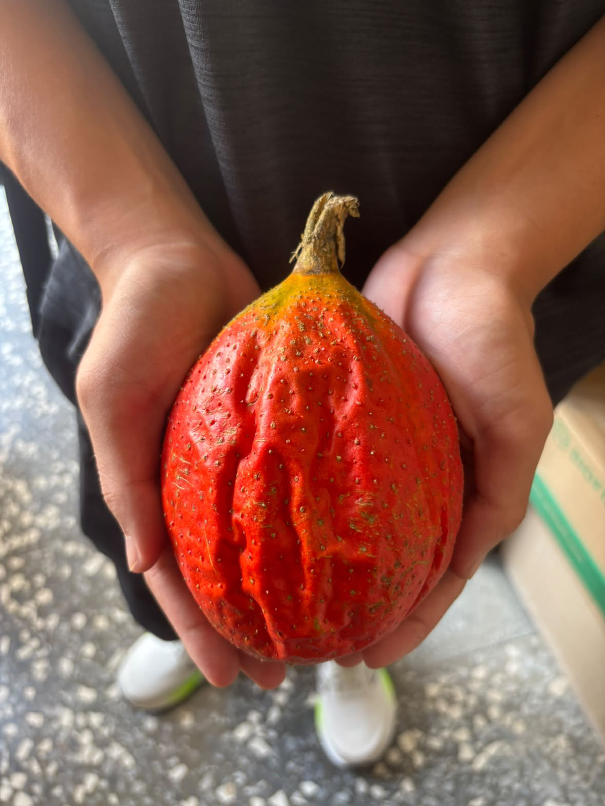
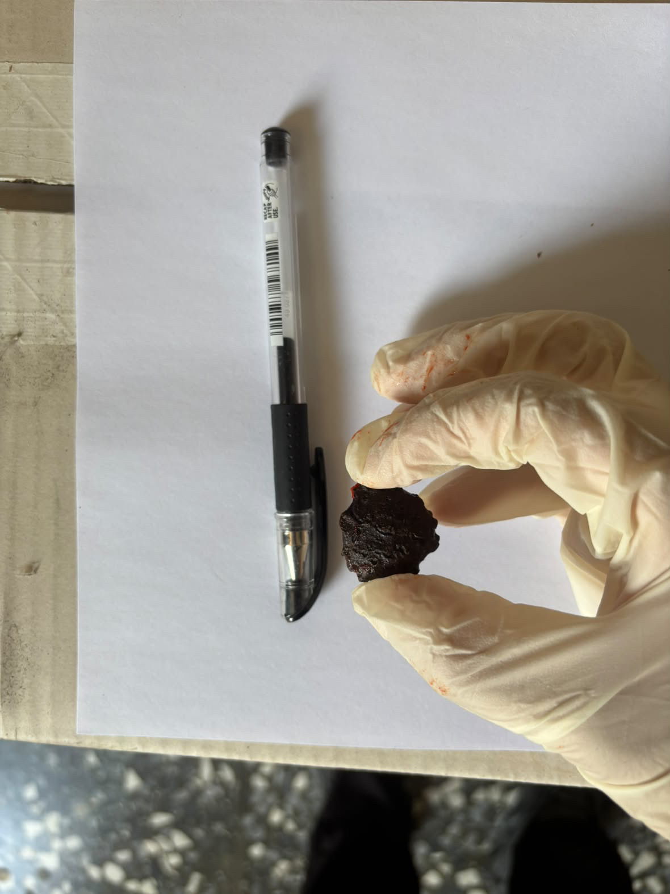
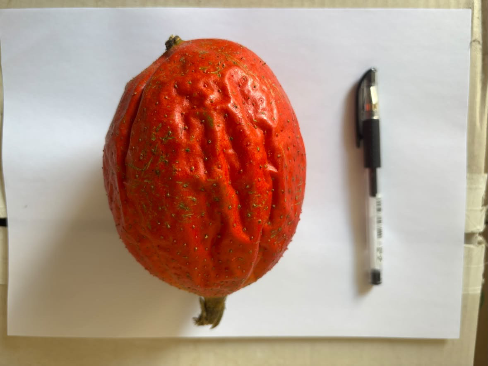
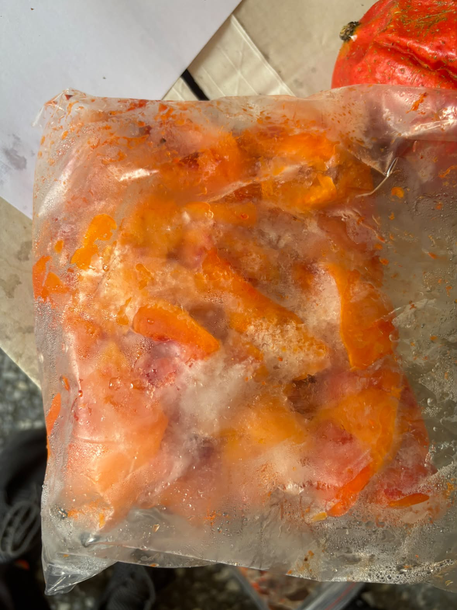
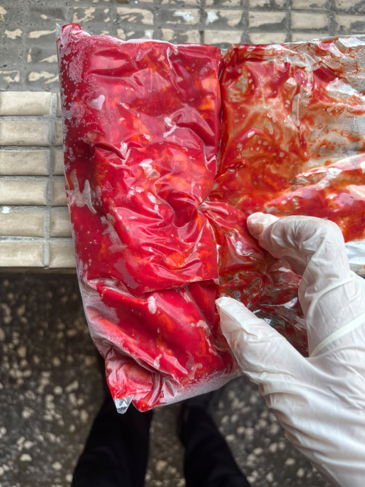
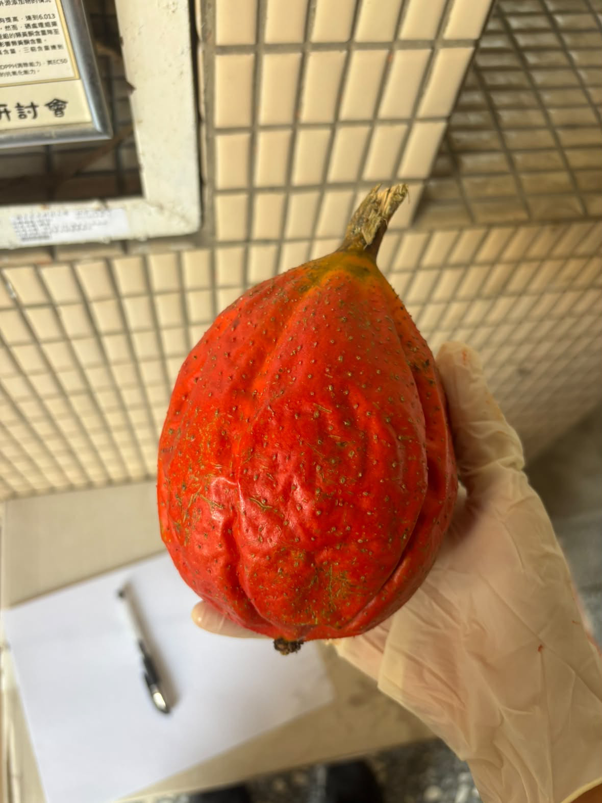

賦予外觀瑕疵農產的新生命
在傳統市場中，許多外表不夠完美的農產品往往面臨被丟棄的命運。然而，「格外農產」並不代表品質打折。透過我們的專題研究，發現這些外觀受損或發育不均的木虌果，其內含的營養價值與核心成分依然十分豐富。
本專題立足於雲林在地農業，關注農產資源循環與永續發展。我們以具有「天堂果實」美譽的木虌果為核心，探討格外農產的升級轉型與創新商品設計，實踐綠色永續的農食價值鏈。
在傳統市場中，許多外表不夠完美的農產品往往面臨被丟棄的命運。然而，「格外農產」並不代表品質打折。透過我們的專題研究，發現這些外觀受損或發育不均的木虌果，其內含的營養價值與核心成分依然十分豐富。

透過嚴謹的秤重與部位拆解實驗，我們分析了木虌果各部位的重量比例。
富含豐富的茄紅素、β-胡蘿蔔素及脂肪酸，是主要的營養精華來源。
包含硬殼種子與厚實外皮，雖不直接食用，但未來可作為生物質資材應用。


結合在地設計思考，將木虌果原料轉化為便於保存、兼具美感與實用性的創新農食商品包裝。

保留天然橙紅色澤與營養，方便後續加工應用。

透過真空密封技術延長保存期限，實現資源循環。

嚴選雲林在地優質鮮果，從產地到餐桌落實永續低碳。